化学e+
Version 1.7
用户使用手册
华东师范大学
曾晋哲 陈子晗 邓凌雪
指导教师：王肃 刘垚
2017-03-03
随着互联网和智能手机的普及，人们获取信息、接受教育的渠道越来越多。在不同层次的化学教学中，掌握化学元素知识尤为重要，它是学习一切化学知识的基础。为了更好地帮助众多学习化学的同学加强对元素记忆和理解，“团队一号”设计并开发了《化学小工具》软件，在元素记忆的基础上，兼有质量计算及帐号管理等功能，取得了一定的成果。然而，《化学小工具》只支持电脑运行及操作，对于广大学生和实验人员来说使用起来不方便，在一定程度上限制了《化学小工具》的推广。因此，我们“团队二号”基于“团队一号”开发《化学小工具》的经验，成功改进出支持多平台的“化学e+（跨平台）”，以兼容更多智能设备及操作系统，希望得到更多化学学习者的关注和喜爱。
本作品旨在开发一款适合化学学习者使用的实用型软件应用，支持多种平台操作，以达到方便快捷的目的。通过此应用，使众多学习化学的同学有一个集化学计算与理论学习的平台，无论课堂还是实验室，这都是一款可靠的应用。
开发者均为华东师范大学2015级学生，所学专业均为化学类。在平时的学习中，总会遇到大量记忆问题和计算问题。例如，我们记不住某一个元素的相对原子质量；在计算某一物质的相对分子质量时，需要先查询元素周期表中各元素的相对原子质量，再用计算器进行精确到百分之一的计算过程，十分繁琐，耗费大量时间。
因此，我们决定设计一个程序，可以查询某个元素的相对原子质量，计算某一物质的相对分子质量，甚至帮助记忆各元素的名称，来解决化学中的各种记忆问题和计算问题。
Windows版:
Windows XP及以上版本打开exe文件，联网环境下使用更佳；
Android版:
Android 4.2及以上版本安装apk文件，联网环境下使用更佳；
iOS版:
iOS 8.0及以上版本（需越狱并安装Cydia
Impactor插件）安装ipa文件，联网环境下使用更佳；
网页版:
IE、Chrome或Safari等浏览器打开https://chemapp.njzjz.win/
（部署于美国服务器）或http://ecnu.njzjz.win/
（部署于学校服务器），须在联网环境下使用；
微信版:
微信(WeChat)
关注微信公众号：chemicaltools，须在联网环境下使用；
关键技术：
1. 前端：Visual Basic、Java、Object-C、HTML/CSS和JavaScript（JQuery）等多种语言；
2. 后端：PHP、MySQL数据库存储等。
特色：
1. 跨平台：化学e+支持Windows、Android、iOS、网页版、微信版五大平台，覆盖了所有主流智能设备；
2. 云同步：统一的账号体系，可在各智能设备登陆五大平台，并同步各平台的数据；
3. 社交化：与所有注册用户比拼元素记忆成绩；同时分享使用化学e+的记录。
下面依次显示不同平台的界面显示图：
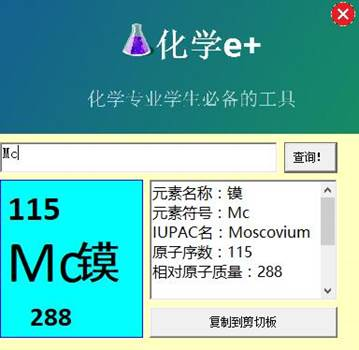
化学e+（Windows版）截图
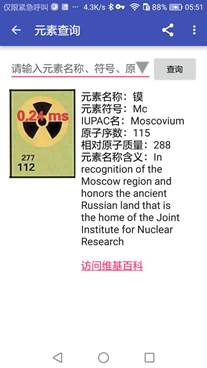
化学e+（Android版）截图
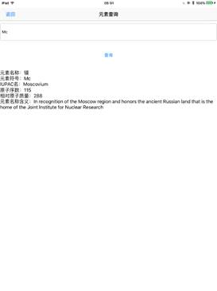
化学e+（iOS版）截图
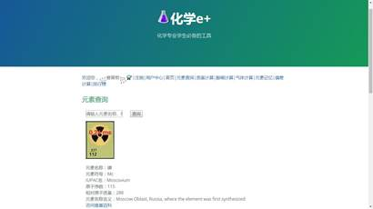
化学e+（网页版）电脑端截图

化学e+（网页版）移动端截图
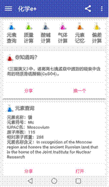
Android客户端主页面默认显示的是首页信息。系统按默认主题将当前用户可使用的功能按模块分类罗列出来，用户可以选择所需的功能使用，同时在界面下方依次显示了上次功能使用的记录。用户可点击相应功能标题进入该功能所在的模块。触击右上角的左侧图标设置了当前常用社交软件的分享，右侧图标涵盖设置、反馈、关于等操作；触击左上角的图标亦可显示该应用的所有内容。
通过触击主页不同功能的标题，或者界面中各功能模块下的【打开】按钮，可以进入不同功能的具体界面。
l 你知道吗？
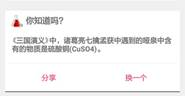
点击【分享】可以把该条内容分享到常用的社交软件上，点击【换一个】可以查看下一条。
l 元素查询
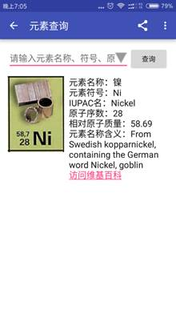
点击【打开】后进入元素查询功能的界面，在输入栏中输入元素的“名称”、“符号”、“原子序数”等信息可以得到该元素的“名称”、“符号”、“IUPAC名”、“相对原子质量”和“元素名称含义”等信息。
l 质量计算
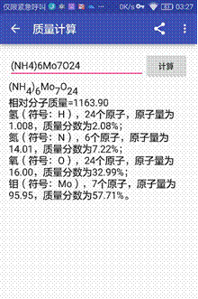
点击【打开】后进入质量计算功能的界面，在输入栏中输入所需计算的分子式，点击【计算】按钮后，下方出现该分子式的“相对分子质量”，以及分子式中各元素原子的个数、每类原子的“相对原子质量”以及该元素在该分子式中占的质量百分比。
l 酸碱计算
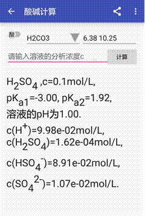
点击【打开】进入酸碱计算功能的模块界面，左上方的按钮可以调解计算酸或计算碱，第一个下拉框中涵盖了常见的算或碱，第二个输入栏中显示了该酸或碱的电离常数，在下方的输入栏中输入分析浓度后，点击【计算】即可得到结果；亦可手动输入新的酸或碱，并输入它们的电离常数，得到结果。结果首先给出了已知条件，显示溶液中主要离子的浓度，结果使用科学计数法并保留两位小数。
l 气体计算
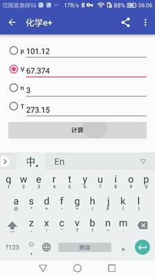
点击【打开】进入气体计算界面，基于克拉伯龙方程，给出压强（P）、体积（V）、摩尔数（n）、温度（T）中任意三个，即可得到未知的结果。
l 元素记忆
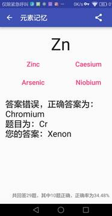
点击【打开】进入元素记忆功能模块，给出一道题目。如图所示，给出了元素符号，在下方给出四个英文选项，用户可触击自己选择的答案，并由系统反馈正确与否，最下方还会显示用户当前答题数、正确数以及正确率。
l 排行榜
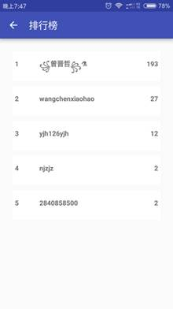
点击元素记忆模块的右上角的符号，可选择进入【排行榜】。在排行榜中，显示了所有联网注册用户的用户名、正确答题数以及排名。
l 偏差计算
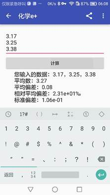
点击【打开】进入偏差计算功能界面，在输入栏内用户可以输入需要计算偏差的所有数据。下方结果给出“平均数”、“平均偏差”、“相对平均偏差”以及“标准偏差”等四类信息。
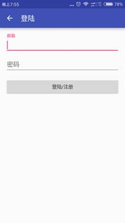
登录/注册界面十分简洁明了，支持邮箱注册与登录的模式。
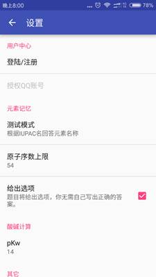
设置界面内容丰富，除了常规的登录、注册的管理，还有元素记忆模块的测试模式更改与测试的原子序数范围，亦可更改酸碱计算中的电离常数积值，还可以清空数据、更新应用。
支持平台：Android版、网页版。
“你知道吗？”模块选取了与化学有关但常常为人们不理解的生活现象及解释，通过触击“换一个”，可以浏览更多。本模块设计目的在于增加该应用的趣味性与生活性，传播更多有趣的化学知识。
支持平台：Windows版、Android版、iOS版、网页版、微信版。
“元素查询”模块的设计满足了不同层次学习者的需求。进入该功能后，通过输入元素名称、符号或原子序数中任意一种，可以准确查询到该元素的相关信息。信息左侧是该元素的实物图，直观的展现了该元素状态等物理信息；右侧信息为元素名称、元素符号、IUPAC名、原子序数、相对原子质量等信息，这些内容满足了中学教育阶段学习者的需求。之后，我们还设置了相应元素的英文维基百科链接（在国内可以正常访问），使得学生及科研人员能获得更多有用的内容。近年来，不断有新的元素被合成，IUPAC也会命名新的元素，我们开发团队也会适时更新本应用中的元素信息和内容。
支持平台：Windows版、Android版、网页版、微信版。
“质量计算”模块主要是对输入的化学式进行准确、快速的相对分子质量计算。科研人员在阅读文献或做实验的时候，可以通过此模块迅速把握实验的用量信息。它的计算结果除了给出某化学式的相对分子质量（精确到小数点后2位），还指明了该化学式中各种元素的含量及质量分数，使用者能够清晰地看到自己需要的结果。
支持平台：Windows版、Android版、网页版、微信版。
“酸碱计算”模块主要针对化学学习者在实验过程中需要耗费大量时间计算pH值等情况而设计。该功能最大特点是全面、精确。本模块在分析化学关于酸碱计算的理论基础上设计而成，它支持酸和碱两种计算方向，又支持多元酸碱计算模式，在下拉框内也给出了常见酸碱的信息，输入分析浓度后，计算结果除了有溶液的pH值，还呈现了溶液中各种离子的浓度，各浓度结果均有相同的有效数字位数，计算结果十分严谨，深受实验人员信赖。
支持平台：Windows版、Android版、网页版、微信版。
“气体计算”模块满足了中学阶段参加化学学科竞赛及本科阶段的学习要求。该模块基于理想气体状态方程表达式，先选择需要计算的量，再按照提示依次输入其他已知量，点击计算，即可在所求量一栏直接看到结果。
支持平台：Android版、网页版、微信版。
“偏差计算”模块是在各种误差表达式的基础上设计的。在化学实验室学习的时候，经常需要进行误差计算，以表征实验结果的准确度与精密度。然而，传统的手算或者借助计算器还是耗时耗力，因而，开发一个方便计算误差的模块十分重要。打开该模块，按照提示，每行输入一个实验结果，再点击计算，即可看到平均数、平均偏差、相对平均偏差、标准偏差和相对标准偏差五个结果，这些结果准确反映了输入数据的离散程度与平均情况。我们还邀请了一部分同学在实验课上使用该功能，获得一致好评。
支持平台：Windows版、Android版、网页版、微信版。
元素记忆模块继承了原“化学小工具”中的主要内容，这次又开发了新的功能，是本应用的一大特色。该模块作为元素学习的好帮手，拥有丰富的操作和使用体验。元素记忆主要以测试的形式对使用者掌握的元素进行考察。在“设置”里面，我们可以选择测试模式，它拥有“根据元素符号回答元素名称”等10种不同的测试方式，受到《专业英语》课程的启发，我们增加了IUPAC名称，作为其中的几个模式。在设置中，我们还可以根据学习者的受教育程度选择元素测验的上限。比如高中阶段要求掌握元素周期表前36位元素，那么高中生在使用该功能时，即可设置原子使用上限为36。还可以选择四选一的选择题模式，使得测试形式多样化。在正式测试答题的时候，除了每题会给出你的正确与否，还会在页面底部显示你当前答题数量、答对数量及正确率，使得用户可以基于这些数据对自己掌握元素的程度有很好的把握。在联网及用户帐号登录后，还可以看到其他账号用户答题情况与正确率，并根据正确率排名。对于自己成绩不满意的用户，还可以选择清空数据，可以重新开始测试并计算正确率。
如需更多帮助，欢迎联系我们：njzjz@msn.com
华东师范大学团队二号
团队电话：13770313112
网址：http://chem.njzjz.win/
VER：V1.2